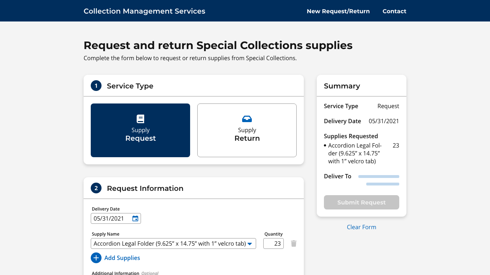
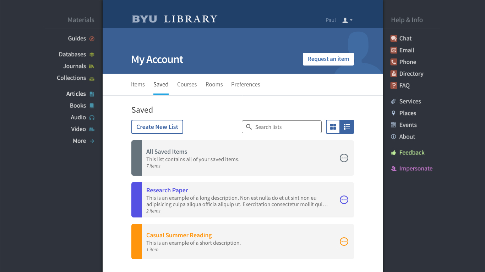

Collection management services
This project came from the Special Collections department of the BYU Library. They have a service
where they provide materials to use along with the special collection items. An employee always had
to be at the desk if someone came to make a request or return because their system was paper-based.
I was able to design a web-based system for them so that they could streamline and simplify the
material request/return process and allow people to initiate a request/return remotely.
There wasn't a style guide or design system I needed to follow for this project. I knew that upfront,
so I was able to start the research/brainstorming process knowing that I had some design
freedom.
See project

Saved items
The My Account section of the BYU Library website had recently been redesigned, but the Bookmarks
page within My Account had not been updated as part of the redesign. I was asked to make the
Bookmarks page match the rest of the new My Account interface while also finding ways to improve the
Bookmarks system.
See project

Site redesign: Navigation and icons
For quite some time, my supervisors had been talking with the BYU Library administration about
redesigning the Library website. As a team, we started thinking about a redesign and how it would
work logistically. We decided to start researching and brainstorming, even though the actual
redesign wouldn't be happening immediately. I was tasked with creating a new navigation style for
the redesign.
See project